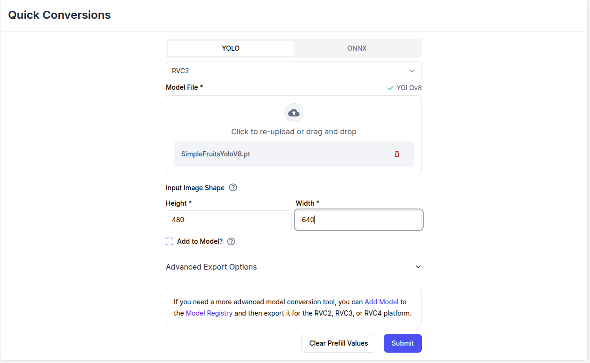

AI Netwerk
Training
Yolo V8
Er is een Colab notebook trainingesmodel beschikbaar.
Volg de instructies van het Colab notebook.
PyTorch
Je kunt ook een eigen script maken met PyTorch, zie: ultralytics
Conversie van Yolo bestanden naar blob bestanden
Na training dient het netwerkbestand best.pt geconverteerd te worden naar een DepthAI compatible bestanden:
Gebruik hiervoor de Luxonis Quick Conversion tool

Na conversie wordt er een bestand gegenereerd:
<source_file>.rvc2.tar.xz: Eigenlijke AI Netwerk, welke in de camera kan worden geladen
Plaats het bestand in de resources map van de my_depthai_python package.
Uitrollen
Modificeer het spatial_detector.yaml uit de config map van de my_depthai_python package.
Vervang de volgende regel:
nn_archive: SimpleFruitsYoloV8.rvc2.tar.xz
door:
nn_archive: "<my_yolo_network>.rvc2.tar.xz"
Netwerk testen
Sluit de DepthAi camera aan op de computer en start de volgende ROS2 applicatie
ros2 launch my_depthai_python spatial_detector.launch.py